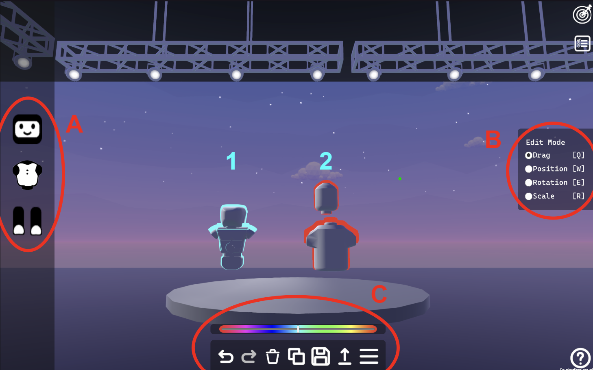

Evaluating the Effectiveness of Iconography for Representing Robot Mental States in the
Build-A-Bot Platform
Benjamin Dossett, Weston Laity, Maisey Toczek, Robel Mamo, Jordan Sinclair, Nicole
Train, Daniel Pittman, and Kerstin S. Haring
2023 32nd IEEE International Conference on Robot and Human Interactive Communication
(RO-MAN)
Exploring Augmented Reality Robot Design
Benjamin Dossett, Daniel E. Pittman, and Kerstin S. Haring
Late Breaking Report at the 2023 IEEE International Conference on Robotics and Automation
(ICRA)
Brush-E Bot: Your Toothbrushing Companion Bot
Maisey Toczek, Benjamin Dossett, Cora Rhodes, Matthew Hessler, Robel
Mamo, and Kerstin S. Haring
Student Design Challenge Entry for the 2024 19th ACM/IEEE International Conference on
Human-Robot Interaction (HRI)

Assessing a Virtual Platform’s Effectiveness in Exploring Mental Models of Robot Design
Weston Laity, Robel Mamo, Benjamin Dossett, Maisey Toczek, Jordan
Sinclair, Nicole Train, Daniel Pittman, and Kerstin S. Haring
2023 32nd IEEE International Conference on Robot and Human Interactive Communication
(RO-MAN)
Augmented Reality Visualization of Autonomous Mobile Robot Change Detection in Uninstrumented
Environments
Christopher Reardon, Jason M. Gregory, Kerstin S. Haring, Benjamin
Dossett, Ori Miller, and Aniekan Inyang
ACM Transactions on Human-Robot Interaction
Active Participatory Social Robot Design Using Mind Perception Attributes
Weston Laity, Benjamin Dossett, Robel Mamo, Daniel Pittman, and
Kerstin S. Haring
2022 14th International Conference on Social Robotics (ICSR)
A novel online robot design research platform to determine robot mind perception
Daniel E. Pittman, Kerstin S. Haring, Pilyoung Kim, Benjamin Dossett,
Gillian Ehman, Elizabeth Gutierrez-Gutierrez, Sneha Patil, and Ashley Sanchez
Late Breaking Report at the 2022 17th ACM/IEEE International Conference on Human-Robot
Interaction (HRI)
A Human-Centered Approach to Evaluating Robot Theory of Mind (RToM)
Kerstin S. Haring, Daniel E. Pittman, and Benjamin DossettSocial Intelligence in Humans and Robots Workshop at Robotics Science and Systems (RSS)
2022